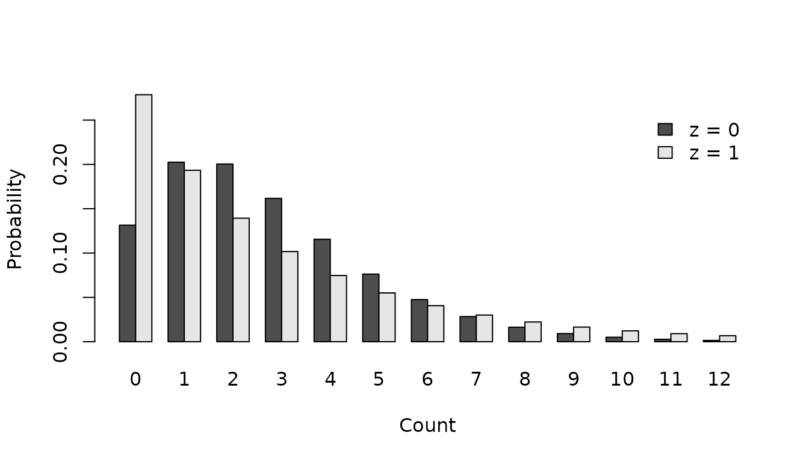

Modeling dispersion and other distribution parameters
Source:vignettes/distribution-parameter-regression.Rmd
distribution-parameter-regression.RmdA regression model for counts usually describes how the mean changes with covariates. The shape of the distribution around the mean (how variable the counts are, how many zeros and large counts there are) can also change with covariates. This vignette shows how to model a distribution parameter, how to read its coefficients, how to see its effect on the distribution, and how to avoid mistaking a wrong mean model for a changing dispersion.
Question and data
Question: given the mean, does the variability of the counts differ between groups of units?
To know the right answer, the data are simulated. A covariate
x changes the mean; a binary covariate z
changes only the NB2 dispersion
:
A constant dispersion, then a dispersion model
dis_param_formula_1 gives a formula for the first
distribution parameter; for NB2 that is
,
modelled on the log scale:
.
(?count_families lists the parameter and its link for every
family.)
nb_const <- countreg(y ~ x, data = sim, family = "NB2", method = "BFGS")
nb_disp <- countreg(y ~ x, data = sim, family = "NB2",
dis_param_formula_1 = ~ z, method = "BFGS")
summary(nb_disp)$coefficients[, 1:2]
#> Estimate Std. Error
#> (Intercept) 1.0111952 0.03401397
#> x 0.6343732 0.05730818
#> ln(alpha):(Intercept) -1.2542710 0.16552628
#> ln(alpha):z 1.3284606 0.19510925The mean coefficients are those of the log mean, as before. The
dispersion coefficients are labelled ln(alpha):; on the
natural scale:
d <- coef(nb_disp)
alpha <- exp(c(z0 = d[["ln(alpha):(Intercept)"]],
z1 = d[["ln(alpha):(Intercept)"]] + d[["ln(alpha):z"]]))
round(rbind(estimate = alpha, truth = exp(c(-1, -1 + 1.2))), 3)
#> z0 z1
#> estimate 0.285 1.077
#> truth 0.368 1.221Both models are fit to the same rows, and the constant-dispersion
model is the dispersion model with the z coefficient set to
zero (an interior restriction), so the likelihood-ratio test is
valid:
regCompTest(nb_disp, model2 = nb_const)$statistics
#> # A tibble: 8 × 3
#> Statistic Model BaseModel
#> <chr> <dbl> <dbl>
#> 1 Log-likelihood -1716. -1743.
#> 2 Number of parameters 4 3
#> 3 AIC 3439. 3492.
#> 4 BIC 3458. 3506.
#> 5 LR Test Statistic 54.9 NA
#> 6 LR degrees of freedom 1 NA
#> 7 LR p-value 0 NA
#> 8 McFadden's Pseudo R^2 0.238 0.226What a dispersion difference does to the distribution
The coefficients of a dispersion model are hard to interpret
directly. Look at the distribution instead.
predict(type = "prob") gives the probability of each count
(with overflow = TRUE, the last column is the probability
beyond max_count, so each row sums to one); the mean,
variance, zero probability and tail probability follow from it. Hold the
mean fixed (same x) and change only z:
profiles <- data.frame(x = 0, z = c(0, 1))
P <- predict(nb_disp, newdata = profiles, type = "prob", max_count = 200,
overflow = TRUE)
k <- 0:200
mean_k <- as.vector(P[, 1:201] %*% k)
var_k <- as.vector(P[, 1:201] %*% k^2) - mean_k^2
cbind(profiles, mean = mean_k, variance = var_k, P_zero = P[, 1],
P_above_10 = rowSums(P[, -(1:11)]))
#> x z mean variance P_zero P_above_10
#> 1 0 0 2.748884 4.904593 0.1314042 0.00573700
#> 2 0 1 2.748884 10.887173 0.2786017 0.03553032
all.equal(mean_k, as.numeric(predict(nb_disp, newdata = profiles)))
#> [1] TRUEThe two profiles have the same expected count, but units with
z = 1 are more than 2 times as variable, with 2.1 times the
probability of a zero and a much heavier upper tail.
barplot(P[, 1:13], beside = TRUE, names.arg = 0:12,
legend.text = c("z = 0", "z = 1"), xlab = "Count",
ylab = "Probability", args.legend = list(bty = "n"))
Fitted probabilities for the two profiles: same mean, different dispersion.
Pitfall: a wrong mean looks like a changing dispersion
A dispersion model should not stand in for a sensible mean model.
Here a binary covariate g raises the mean and the
dispersion is constant
(,
).
The first model leaves g out of the mean but lets the
dispersion depend on it; the second puts g in the mean:
set.seed(4)
n2 <- 800
sim2 <- data.frame(x = runif(n2, -1, 1), g = rbinom(n2, 1, 0.5))
sim2$y <- rnbinom(n2, size = 1 / exp(-1),
mu = exp(1 + 0.5 * sim2$x + 0.8 * sim2$g))
wrong_mean <- countreg(y ~ x, data = sim2, family = "NB2",
dis_param_formula_1 = ~ g, method = "BFGS")
right_mean <- countreg(y ~ x + g, data = sim2, family = "NB2",
dis_param_formula_1 = ~ g, method = "BFGS")
disp_rows <- c("ln(alpha):(Intercept)", "ln(alpha):g")
cw <- summary(wrong_mean)$coefficients[disp_rows, 1:2]
cr <- summary(right_mean)$coefficients[disp_rows, 1:2]
round(cbind(wrong_mean = cw, right_mean = cr), 3)
#> Estimate Std. Error Estimate Std. Error
#> ln(alpha):(Intercept) -0.252 0.119 -1.030 0.156
#> ln(alpha):g -0.616 0.185 -0.023 0.191With g missing from the mean, the counts in each
g group are systematically above or below the fitted mean,
and that misfit is read as extra variation: the estimated
for g = 0 is 0.78 instead of 0.37, and the g
coefficient of the dispersion is 3.3 standard errors from zero although
the true dispersion does not depend on g. With
g in the mean,
is estimated at 0.36 and the g dispersion effect is 0.1
standard errors from zero. Check the mean model first (residuals against
covariates; see
vignette("diagnosing-count-models", package = "flexCountReg")),
then model the dispersion.
Underdispersion: counts less variable than Poisson
Negative binomial models allow only overdispersion. Counts can also
be less variable than Poisson counts with the same mean, for
example when events are regularly spaced. The shell-ring counts of
abalone_rings are such a case (a random subsample of 600
animals keeps the example fast):
data("abalone_rings")
set.seed(3)
ab <- abalone_rings[sample(nrow(abalone_rings), 600), ]
f_ab <- rings ~ sex + length + shell_weight
ab_pois <- countreg(f_ab, data = ab, family = "POISSON", method = "BFGS")
sum(residuals(ab_pois, type = "pearson")^2) / (nobs(ab_pois) - 5)
#> [1] 0.6188365The Pearson dispersion is well below 1. Several families allow underdispersion; two of them:
-
DPO, the double Poisson, with precision : is underdispersed, Poisson. -
GAMMACOUNT, the number of events of a renewal process with gamma waiting times of shape : (more regular than random arrivals) is underdispersed, Poisson.
In flexCountReg both are parameterized by their exact mean, , so their coefficients mean the same as Poisson coefficients. Neither family has a closed-form mean, so the natural parameter is found for each observation by solving the mean equation numerically; these fits are slower than closed-form families.
ab_dpo <- countreg(f_ab, data = ab, family = "DPO", method = "BFGS")
ab_gc <- countreg(f_ab, data = ab, family = "GAMMACOUNT", method = "BFGS")
data.frame(
model = c("Poisson", "DPO", "GAMMACOUNT"),
logLik = c(logLik(ab_pois), logLik(ab_dpo), logLik(ab_gc)),
AIC = c(AIC(ab_pois), AIC(ab_dpo), AIC(ab_gc)),
shape = c(NA, exp(coef(ab_dpo)[["ln(phi)"]]),
exp(coef(ab_gc)[["ln(shape)"]])))
#> model logLik AIC shape
#> 1 Poisson -1399.920 2809.841 NA
#> 2 DPO -1355.688 2723.377 1.800480
#> 3 GAMMACOUNT -1357.233 2726.467 1.842923Both estimate a shape parameter above 1 (underdispersion) and fit far better than the Poisson model. Poisson is a special case of both (at and , interior points), so their summaries report a likelihood-ratio test against it:
summary(ab_dpo)$lr_test[c("statistic", "df", "p.value")]
#> $statistic
#> [1] 88.46401
#>
#> $df
#> [1] 1
#>
#> $p.value
#> [1] 5.176817e-21Because the families are parameterized by their mean, the predicted mean is the mean of the fitted distribution, and its variance is below the mean:
one <- ab[1, ]
P1 <- predict(ab_dpo, newdata = one, type = "prob", max_count = 60,
overflow = TRUE)
k1 <- 0:60
m1 <- sum(P1[1, 1:61] * k1)
c(predicted_mean = predict(ab_dpo, newdata = one), mean_from_pmf = m1,
variance_from_pmf = sum(P1[1, 1:61] * k1^2) - m1^2)
#> predicted_mean mean_from_pmf variance_from_pmf
#> 7.438462 7.438462 4.127312The two families fit about equally well here; the data do not distinguish “regular spacing” (gamma count) from the double Poisson’s form of underdispersion.
Supported combinations
Distribution-parameter formulas work for every family with a
distribution parameter (?count_families lists them),
alongside offsets, weights and zero models. Underreporting is available
only for families whose reported counts stay in the same family (not for
DPO or GAMMACOUNT), and random-parameter models with the numerically
solved families are slow.
Reproducibility and next steps
All random steps use explicit seeds.
-
vignette("choosing-a-count-distribution", package = "flexCountReg")compares many families on one dataset. -
?count_familiesgives each family’s parameters, links and variance. -
vignette("predictions-and-effects", package = "flexCountReg")interprets effects on the expected count.